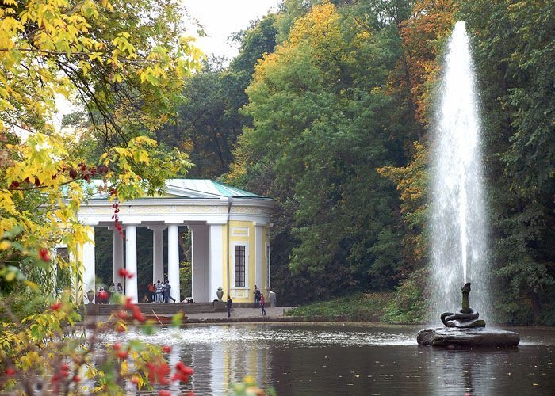

Софіївський парк, або Софіївка, — це одне з найвидатніших парково-архітектурних чудес України, розташоване в місті Умань Черкаської області. Він був заснований у 1796 році польським магнатом Станіславом Потоцьким як подарунок його дружині Софії Вітт-Потоцькій, що й пояснює назву парку. Це не просто парк, а справжній шедевр садово-паркового мистецтва, який поєднує природну красу з архітектурними композиціями, натхненними античною міфологією. Софіївка охоплює площу понад 180 гектарів і славиться своїми мальовничими ландшафтами, унікальними скульптурами, каскадами водоспадів та водяними каналами.
Софіївський парк має багату міфологічну символіку. Прогулюючись його алеями, можна побачити сцени з давньогрецьких міфів, такі як гроти, наприклад, Сцилли й Харібди, Грот Страху і Суму створений із великих кам'яних брил, які нависають одна над одною, створюючи таємничу атмосферу. Грот Венери, навпаки, символізує красу й гармонію. Також Еолова арфа, статуї богів і героїв. Особливе місце займає "Острів Кохання" — романтичний куточок, де розташована ротонда. Головною водною артерією парку є річка Кам’янка, яка утворює мальовничі озера та ставки. Одним із найвідоміших об’єктів є Верхній ставок із фонтаном "Змія", що викидає струмінь води заввишки до 18 метрів. Також не менш популярним є Венеціанський міст, де часто зупиняються відвідувачі, щоб зробити фото.
Парк — це також місце ботанічного багатства. Тут росте понад 2000 видів дерев і кущів з усього світу. Особливо вражають магнолії, платани, кипариси та тюльпанові дерева. Весною парк перетворюється на справжню квіткову казку.
Сьогодні парк активно розвивається. Створюються нові ландшафтні зони, модернізується інфраструктура. Для гостей доступні катання на човнах, екскурсії електромобілями, кінні прогулянки. Щороку Софіївський парк відвідують сотні тисяч туристів з різних куточків світу. Восени тут проводяться фестивалі хризантем, а влітку — культурні заходи просто неба. Софіївка є одним із символів Умані та українського культурного надбання. Відвідини Софіївки — це подорож у світ гармонії природи й мистецтва, що залишає незабутнє враження. Саме тут кожен куточок дихає історією та романтикою, а краса природи вражає своєю довершеністю.